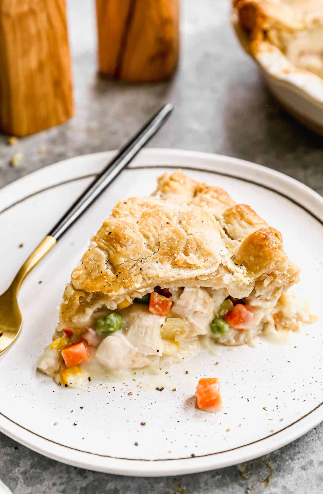

Chicken Pot Pie Recipe

You're telling me a chicken potted this pie?
A delicious chicken pie made from scratch with carrots,
peas, and celery in a pre-made crust. Add thyme and
poultry seasoning for more flavor.
Ingredients
- Boneless, skinless chicken breast meat, cut into cubes
- Peas
- Carrots
- Onions
- Celery
- Butter
- All purpose flour
- Salt and pepper, to taste
- Celery seed seasoning
- Chicken Broth
- Milk
- 2 unbaked pie crusts
Steps
- Boil the cubed chicken with the carrots, peas, and celery for about 15 minutes. Drain and set aside. Cook the onions in butter until they're
translucent, then stir in the flour and seasonings. Add the chicken broth and milk and simmer until the filling is thick.
- Break bread into small pieces and add to crab meat. Add beaten egg, Old Bay seasoning, mayonnaise, mustard, and Worcestershire sauce to the bowl.
Mix by hand to avoid overworking crab meat; you want to keep the lumps of meat as much as possible. Form into 6 patties.
See more recipes